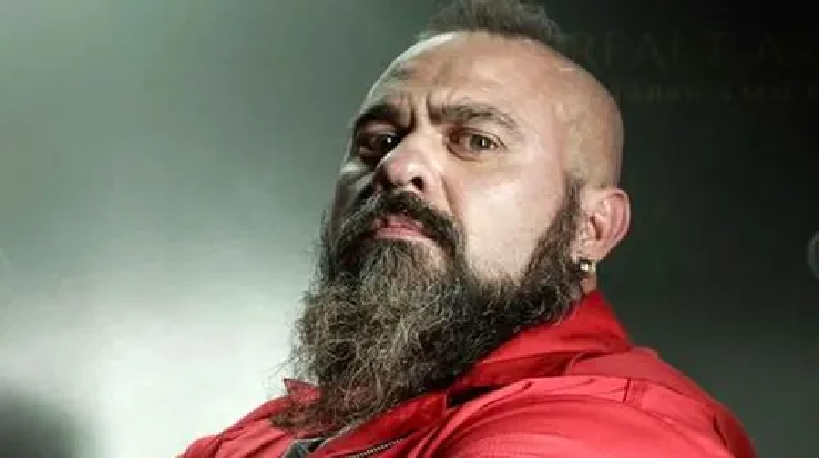

Oslo - The Brother
Oslo, portrayed by Roberto García, plays a vital role as The Brother
in the Royal Mint of Spain heist in "Money Heist." Oslo's character is
defined by a familial connection with Helsinki, creating a unique bond
within the group. Despite his imposing appearance, Oslo brings a sense
of warmth and loyalty to the team. As the series unfolds, Oslo's journey
becomes intertwined with themes of family, camaraderie, and the challenges
faced during the high-stakes heist orchestrated by the Professor. His
character adds depth to the narrative, exploring the intricate dynamics
within the gang and showcasing the human side of those involved.